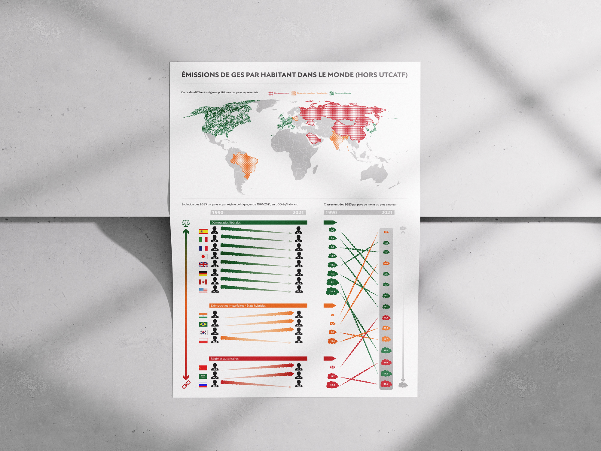
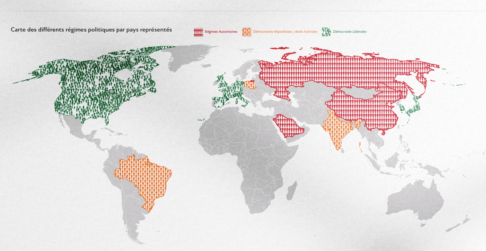
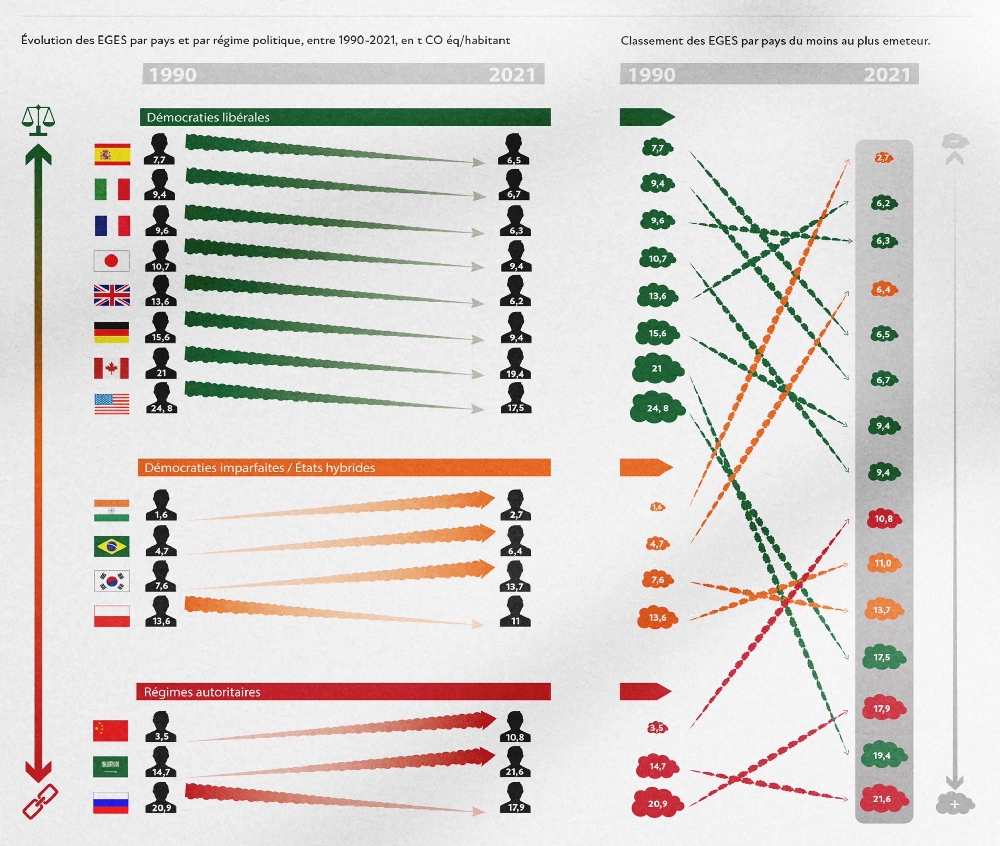

Le projet met en relation l’évolution des émissions de GES par habitant et les régimes politiques entre 1990 et 2021. Il vise à rendre ces données complexes lisibles et comparables, tout en évitant toute interprétation biaisée grâce à une visualisation claire et neutre.
La première visualisation est une carte du monde situant les régimes politiques. Un dégradé du vert au rouge, structure la lecture. Chaque catégorie est associée à un motif : grille rigide (autoritaire), grille assouplie (hybride), composition libre (démocratie).
Le second graphique présente l’évolution des émissions par habitant entre 1990 et 2021. Des flèches nuageuses traduisent les variations : orientation et épaisseur indiquent hausse ou baisse. Des silhouettes humaines matérialisent la donnée par habitant et la rendent plus concrète.
Un troisième graphique classe les pays du moins au plus émetteur. Les émissions sont représentées par des nuages proportionnels, tandis que la couleur reste réservée au régime politique. Ce croisement évite toute lecture simpliste et montre la complexité des corrélations.


